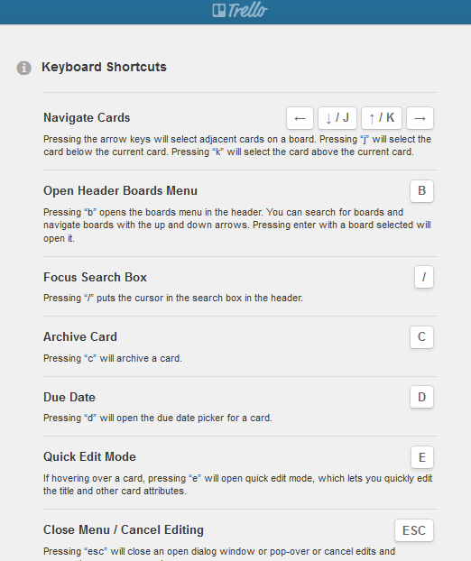
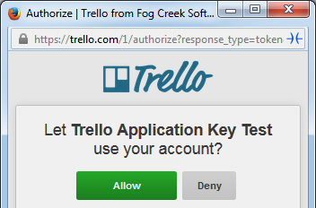
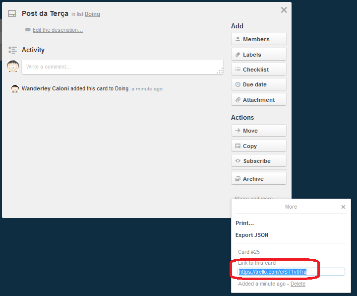
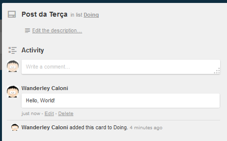
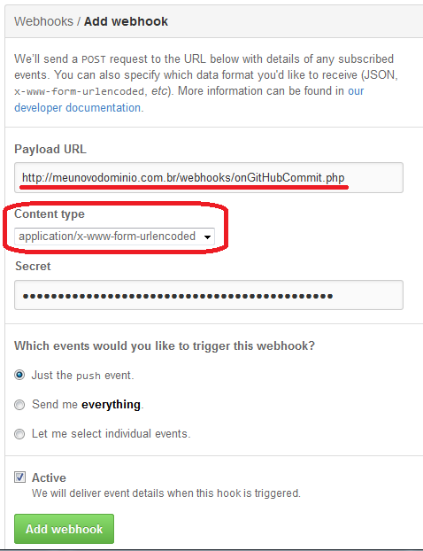
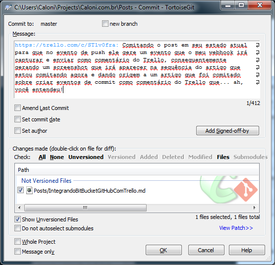
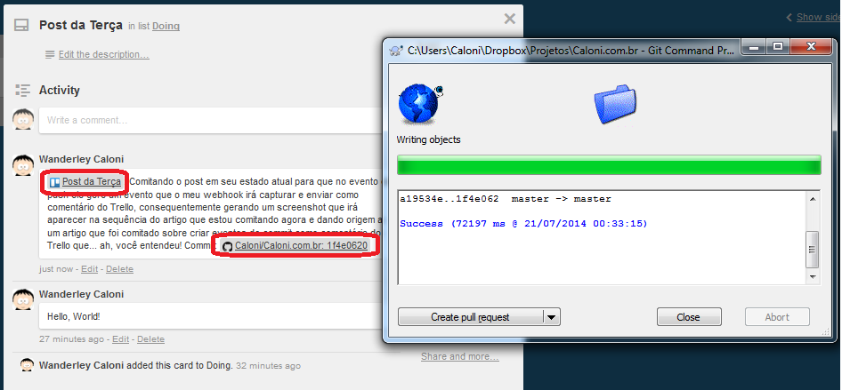
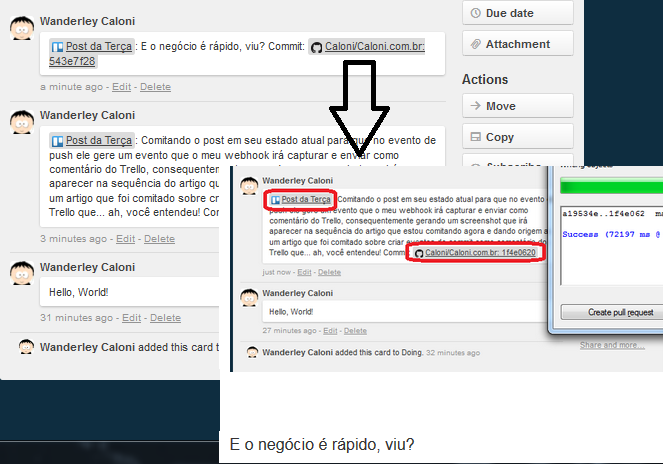

# Introdução à Introdução à Computação
Caloni, 2014-07-01 <books> <computer> [up] [copy]O livro começa lá nos primórdios da informação, antes mesmo da humanidade. Sim, pois informação não necessita sequer de um ser sensciente para ser transmitida e utilizada, como já foi comprovado através de nosso código genético, o agora-popular-por-causa-do-ratinho DNA. Uma informação codificada intrinsecamente no processo de reprodução das células de um ser vivo. Um computador orgânico!
Porém, mais do que explicar o que é informação, o livro de Gonick consegue fazer pensar que computadores sequer existiriam se seres humanos não estivessem sendo sufocados nesse último século de toneladas de informação para processar. É por isso que temos a dramática aventura de Charles Babbage e Ada Lovelace (nossa primeira programadora, a gatona da foto abaixo), também descrito na íntegra e com detalhes no livrinho ilustrado.
Antes mesmo da invenção do computador nós usávamos outras coisas para armazenar e reproduzir informação, como escrita, cérebro, discos de vinil, direitas no queixo... e para processar a informação, que é transformá-la em alguma outra informação, um dos primeiros "computadores" embutidos do homem foram seus próprios dedos, que permitiram contar e fazer contas simples de adição. Dessa forma, os cálculos que usavam nossos dedos logo se transformou em nossa era digital. Daí para escrita e ábaco foi um salto (de alguns milhares de anos).
Passando por romanos, persas, chineses e a Revolução Industrial, a narrativa cômica de Gonick nos leva para as entranhas do sistema computacional moderno com as invenções do já citado Babbage e Herman Hollerith. Este último revolucionou o processamento de dados do censo populacional e fundou a ainda de pé IBM, onde o escovador-de-bits em kernel Fernando (do blogue DriverEntry) atualmente vive suas peripécias.
E por falar em bits, essa é uma parte importante desta saga, pois foi com o conceito binário que toda a lógica computacional evoluiu. Iniciando com simples eletricidade e a tecnologia de circuito que permite que acendamos e apaguemos uma lâmpada e terminando na mágica mais pura, simples e poderosa para os programadores (de hardware e sofware): o flip-flop. Gonick chega ao cúmulo de explicar todas as invenções da época encontrando sua necessidade de fatos do dia-a-dia -- como as telefonistas -- se transformando em uma espécie de Tanenbaum desenhista. Das válvulas aos semicondutores, o livro engrossa nosso conhecimento a cada imagem, fazendo-nos repensar novamente o que já havíamos cansado de aprender na faculdade ou em livros ou na internet.
Sua Parte II, o espaguete lógico, acredito que seja o que mais interessa a nós, programadores. Por isso espero dissecá-lo com um pouco menos de palavras e um pouco mais de código. Até lá!
# Sobre a BitForge
Caloni, 2014-07-03 <computer> <debugging> [up] [copy]BitForge é minha empresa principal e onde eu trabalho resolvendo os problemas mais difíceis de computação; nos contrate para resolver seu problema pelo Linkedin ou enviando um email para wanderleycaloni@gmail.com. Conversar sobre seu projeto e até gastar uma horinha entendendo ele faz parte do nossa forma de se aproximar de você sem precisar da burocracia de um contrato ou pagamento de consultoria. Marque um café ou uma call conosco =)
Somos especialistas em software que já ajudamos dezenas de empresas a alcançar seus objetivos. Nós podemos fazer o mesmo por você desde a concepção, estudo de viabilidade e escolha de tecnologia até a solução de problemas de produção, como performance insuficiente ou bugs intermitentes. Se sua empresa precisa de um apoio na área de software para plataformas Windows e Linux (e outros nixes), nós podemos ajudá-lo.
Nosso foco é oferecer consultoria, suporte e desenvolvimento especializado para ajudar sua empresa com problemas técnicos que parecem insolúveis. Contamos com know-how completo em sistemas operacionais Linux e MS Windows, e nas linguagens C/C++/C#, Python, Java, Rust e até Assembly!
# TDC 2014
Caloni, 2014-07-08 [up] [copy]O programador C/C++ de médio e baixo nível em Windows precisa estar familiarizado com as potencialidades de suas ferramentas de trabalho. Entre elas, o WinDbg é de longe o mais completo e complexo, além de ser quase desconhecido pela comunidade.
Essa palestra visa um público que deseja conhecer novas técnicas de depuração para problemas específicos, mas comuns, como leak de memória, travamento durante shutdown da máquina e análise de processos de maneira não-intrusiva.
Apresentando o WinDbg: para os ainda não iniciados, uma visão geral do que é o WinDbg, como ele funciona e em que ele pode ajudar o programador C/C++.
Leak de Memória: nessa segunda parte já passamos para a prática, adicionando ao cinto de utilidades do programador dicas valiosas para detectar rapidamente onde está ocorrendo vazamento de memória constante.
Depurando até o último segundo: para análises mais hardcore às vezes é necessário depurar onde até o sistema operacional está indo embora; essa terceira parte da palestra visa mesclar técnicas de user-mode e kernel-mode para depurar um serviço que trava durante o reboot da máquina.
Dicas e truques rápidos: nesta última parte aprenderemos um apanhado de truques para o iniciante não se perder muito tempo nos problemas que eventualmente encontrará usando o WinDbg. Também aprenderá a realizar tarefas mais raras, como comparação de strings, busca na memória, etc.
Ainda estou pensando quais truques colocar. Se tiver alguma sugestão de algo que seja muito difícil de fazer na depuração Windows ou tenha alguma dica para compartilhar, ainda dá tempo.
O TDC continua sendo esse evento com muitas trilhas, mas que tem como virtude reunir comunidades que geralmente ficam muito afastadas umas das outras. Na trilha C/C++ a vantagem é ainda maior, pois a área onde um programador da linguagem atua pode variar enormemente. Esse ano teremos palestras sobre metaprogramação (Rodrigo Madera), modularização de código (Felipe Lavratti), c++ para android e ios com o mesmo fonte (Fernando Luiz Rizzato), análise dos passos de uma compilação (Rodrigo Strauss), uma olhada no sistema wow64 do kernel do Windows (Fernando Roberto da Silva) e programação funcional (Fabio Galuppo). Ou seja, uma grade espetacularmente variada!
Então é isso. Garanta seu ingresso, faça networking, assista as palestras do seu interesse e pode me procurar durante o dia para tirar dúvidas sobre qualquer assunto relacionado a C++ e coisas que já mexi.
# TDC 2014: Segurança
Caloni, 2014-07-16 [up] [copy]Nesse TDC, além da minha palestra usual na trilha C/C++ irei participar da trilha de segurança, voltando às minhas origens, quando programava em empresas da segurança da informação. Foram 10 anos!
Estão marcadas duas palestras nesse dia (quinta-feira, 7 de agosto de 2014): uma já ministradas outras vezes sobre o processo de engenharia reversa do dicionário Houaiss, que gerou tantas discussões nos comentários e versões alternativas (inclusive em Python!) do código. Aqui, além de já explicar o processo que me fez abrir o dicionário Houaiss para uso no Babylon, pularei a parte do uso no Babylon e irei focar mais nas técnicas de segurança que podemos utilizar para tornar essa engenharia reversa não impossível, mas pelo menos um pouco mais difícil.
Já a segunda palestra é bem rápida -- espero! -- e fala sobre um artigo que li de Laura Diane Hamilton sobre algoritmo de embaralhamento de cartas para saites de pôquer. Esse artigo, que irei demonstrar, explica diversas falhas do código de um saite e eu tentarei explicar brevemente maneiras de se aproveitar dessas falhas, além -- é claro -- de como se proteger contra isso!
Então é isso aí, mais um dia, mais uma trilha, mais bits e bytes. Nos vemos por lá!
# Integrando BitBucket/GitHub com Trello
Caloni, 2014-07-22 <computer> [up] [copy]Eu nem acredito que estou escrevendo sobre desenvolvimento web, mas como foi algo que me fez dedicar algumas horas do meu fim-de-semana, e não encontrei facilmente uma solução já feita, acredito que pode ser útil para mais alguém que usa Trello e GitHub (ou BitBucket).
Mas o que é Trello? Basicamente é um TodoList feito da maneira mais inteligente possível: uma lista de listas de listas! Os espaços, ou desktops, onde você organiza suas tarefas são chamados de Boards. Em cada board vivem L listas, e em cada lista vivem C cards. Cada card pode conter comentários, histórico de mudanças, labels, checklists, due dates e todas as tranqueiras que geralmente existe em uma lista de tarefas. É um sistema online, desenvolvido pela empresa do Joel Spolsky (o mesmo do excelente blogue de programador [Joel on Software] e que contém algo que eu adoro em sistemas web: atalhos!
A ideia que tive foi usar os webhooks dos saites de repositórios de fontes para permitir comentar dentro dos cards o commit que foi feito, sua mensagem e o linque para o commit. OK, mas por que não usar o sistema de issues dos já feitos pra isso GitHub e BitBucket? Ele já faz isso muito melhor. De fato. Porém, fica espalhado pelos repositórios, e não é sempre que uma tarefa envolve código (comprar pão, por exemplo). Além do mais, praticamente qualquer serviço desses oferece hooks para a integração de outros projetos/serviços, então se um dia nascer mais um sistema de controle de fonte ou mais um saite que organiza essas tralhas haverá um hook e consequentemente mais uma adaptação do meu código PHP.
E por que PHP? Bom, PHP é uma linguagem fácil de mexer (se parece com C, mas é um script) e praticamente qualquer servidor web do universo, mesmo o mais baratinho, vem com o pacote Apache + PHP (e geralmente uma base MySql). Dessa forma, é uma solução que pode ser implantada fácil e rapidamente.
Vamos começar pelo mais difícil que o resto vai fácil: comentar pela API do Trello. Sua API é beta, assim como sua documentação, então tive arrancar significado inexistente em seu help, mas acabou funcionando. Como qualquer API web, você precisa de uma chave, segredo e a permissão do usuário. Com essa permissão é possível comentar em todas as boards que esse usuário específico tem acesso.
Pelo menos a parte de geração de chave/segredo é simples, tanto que se você clicou nesse linque, já conseguiu gerar uma =).
Depois disso, mesmo nessa página já é possível conseguir uma chave de acesso para o seu usuário.
Por fim, para fazer o código que irá comentar dentro de um card no Trello, basta usar dois ou três métodos que lidam com enviar coisas pela web (não me pergunte mais que isso):
<?php
$url = 'https://trello.com/1/cards/ID_DO_CARD/actions/comments';
$msg = 'Hello, World!';
$data = array(
'key' => 'AQUI_VAI_SUA_CHAVE',
'token' => 'AQUI_VAI_SEU_TOKEN_DE_ACESSO',
'text' => $msg
);
$options = array(
'http' => array(
'header' => "Content-type: application/x-www-form-urlencoded\r\n",
'method' => 'POST',
'content' => http_build_query($data),
),
);
$context = stream_context_create($options);
$result = file_get_contents($url, false, $context);
?>
As informações _AQUI_VAI_SUA_CHAVE_ e _AQUI_VAI_SEU_TOKEN_DE_ACESSO_ você já obteve no linque de geração de key/secret. Já o _ID_DO_CARD_ é algo que depende de em qual lista seu card está, mas felizmente também existe um shortlink único e imutável para cada card no sistema:
Basta usar o ID em Base64-ou-o-que-o-valha no lugar de _ID_DO_CARD_ que já estamos OK. Depois que este código conseguir ser executado, basta ter acesso à internet que ele irá escrever "Hello, World" no cartão referenciado:
Muito bem. Primeira parte da missão concluída.
Como o GitHub é um dos serviços de repositório de fontes mais famoso, vamos torná-lo nosso caso de sucesso. Basicamente você deve ir no seu repositório do coração (essa é a parte ruim: se você tem mais de um coração, vai ter que repetir esse mesmo procedimento para todos os outros repositórios dos seus outros corações), Settings, Webhooks & Services.
Lembre-se de colocar seu código PHP em um servidor visível na web. Lembre-se também de usar o método de envio urlencoded do payload para simplificar seu tratamento. Para simplificar ainda mais o processo, coloque qualquer coisa no segredo (não validaremos neste post, mas #ficadica de segurança se você não quer que outros acessem seu PHP inadvertidamente).
Pois bem. No código que irá receber o payload do GitHub precisamos de duas coisas: saber qual a estrutura que vai ser recebida e _como localizar o id do card onde iremos enviar a informação_. Nesse caso, mais uma vez, para simplificar, vamos procurar pelo próprio linque permanente do cartão na mensagem do commit. Aliás, doS commitS (sendo um push, é provável que o evento seja gerado com diversos commits aninhados).
<?php
$pushData = json_decode($_POST['payload']);
foreach( $pushData->commits as $c )
{
$msg = $c->message;
$pattern = '#http[s]*://trello.com/c/([A-Za-z0-9]+)#';
if( preg_match($pattern, $msg, $matches) == 0 )
continue;
$url = 'https://trello.com/1/cards/' . $matches[1] . '/actions/comments';
$msg = $c->message . ' Commit: ' . $c->url;
$data = array(
'key' => 'AQUI_VAI_SUA_CHAVE',
'token' => 'AQUI_VAI_SEU_TOKEN_DE_ACESSO',
'text' => $msg
);
$options = array(
'http' => array(
'header' => "Content-type: application/x-www-form-urlencoded\r\n",
'method' => 'POST',
'content' => http_build_query($data),
),
);
$context = stream_context_create($options);
$result = file_get_contents($url, false, $context);
}
?>
Agora é só testar. Posso pegar esse mesmo artigo e comitá-lo no repositório do blogue usando o linque único do card da tarefa de escrever este artigo. Ou seja, aqui é Inception na veia, mermão!
O que vai deixar você perplexo é entender como esse texto está sendo comitado antes mesmo de eu comitar este texto ;).
E o negócio é rápido, viu?
A única coisa que muda no caso do BitBucket é a tela onde deve ser inserido seu webhook (método POST, sempre) e a estrutura JSon que é enviada. De lambuja, eis o que deve ser feito com esse payload:
<?php
$bitData = json_decode($_POST["payload"]);
foreach( $bitData->commits as $c )
{
$msg = $c->message;
$pattern = '#http[s]*://trello.com/c/([A-Za-z0-9]+)#';
if( preg_match($pattern, $msg, $matches) == 0 )
continue;
$url = 'https://trello.com/1/cards/' . $matches[1] . '/actions/comments';
$msg = $c->message . ' Commit: ' . $bitData->canon_url . $bitData->repository->absolute_url . 'commits/' . $c->raw_node;
$data = array(
'key' => 'AQUI_VAI_SUA_CHAVE',
'token' => 'AQUI_VAI_SEU_TOKEN_DE_ACESSO',
'text' => $msg
);
$options = array(
'http' => array(
'header' => "Content-type: application/x-www-form-urlencoded\r\n",
'method' => 'POST',
'content' => http_build_query($data),
),
);
$context = stream_context_create($options);
$result = file_get_contents($url, false, $context);
}
?>
# As Bicicletas de Belleville
Caloni, 2014-07-23 <cinema> <movies> [up] [copy]Este não é um desenho convencional, nem pode-se dizer que é para crianças, pois possui momentos extremamente dramáticos e violentos. Porém, mesmo esses momentos conseguem ser nivelados ao surrealismo que permeia toda a película conduzida por Sylvain Chomet. Porém, não se sabe se esse nivelamento serve para eufemizar a triste realidade do cotidiano ou para celebrá-lo com todas as suas cores lúdicas de um tempo e de uma época eterna nas pinturas de arte.
E por falar em obras de arte, este filme é conduzido e tratado como uma tanto em seu visual quanto em sua narrativa sonora. Ele consegue discutir obesidade e o crescimento desordenado das cidades ao mesmo tempo em que faz piada com um cachorro gordo e desajeitado. Sua trilha musical parece ser uma obra à parte, mas quando assistimos ambos juntos, vemos que inacreditavelmente ela foi composta para cada momento da coesa e empolgante história.
E a história, ela gira muito mais em torno de seus personagens do que tramas e subtramas. Fala sobre uma avó que deseja tornar o neto feliz, que por sua vez encontra no ciclismo um motivo de viver. Fala sobre um cachorro traumatizado por trens, assim como fala de um magnata excêntrico da indústria do vinho, ou sobre os diferentes níveis de desumanidade que o capitalismo escancara nas pessoas.
Por falar em capitalismo e arte, ele fala sobre as trigêmeas de Belleville, cantoras de sucesso de uma época vintage em uma Broadway fictícia, mas muito mais real em suas brincadeiras ácidas que os musicais que ela produziu. São as trigêmeas que unem as pontas desta narrativa, ou melhor dizendo, a televisão. Mesmo o ato de assistirmos um filme de animação, entretenimento por natureza, vira motivo de pensamento nos segundos finais de As Bicicletas de Belleville, uma viagem profunda e filosófica realizada com tamanho afinco áudio-visual que merece ser revisitada diversas vezes.
# Vestindo a Camisa da Minha Empresa
Caloni, 2014-07-30 [up] [copy]Pois é, o tempo passou, e desde 2011 eu passei mais de três anos nessa minha nova empreitada no Mercado Financeiro. Bom, tudo que é bom acaba, para começar algo melhor ainda. No caso da minha experiência com a EzMarket (hoje UOL/Diveo Broker) foi algo quase que surreal trabalhar em um ambiente tão formidável com pessoas mais formidáveis ainda, tanto pessoalmente quanto tecnicamente. Aprendi muito sobre análise de risco e um tanto sobre conexões e protocolos de rede, e mais ainda sobre serialização e desempenho. Tive momentos prazerosos em reuniões de definição de arquitetura, (poucas) madrugadas de debugging e testes no cliente, (muitas) idas ao café da esquina para um ótimo papo e vários outros momentos que não me lembro agora, mas que não me arrependarei jamais, e sempre sentirei saudades.
E já que é pra começar algo melhor ainda, me sinto feliz em anunciar minha parceria societária com o meu amigo de longa data Rodrigo Strauss, primeiro blogueiro escovador de bits do país (antes disso nós escovávamos bits em uma empresa de segurança da informação) e co-fundador da comunidade C/C++ Brasil. O Strauss passou também um bom tempo no Mercado Financeiro, trabalhando dentro da BM&F Bovespa fazendo o ajuste fino de servidores transacionando centenas de milhares de zillhões de negócios diários e gerenciando uma equipe. Seus projetos pessoais sempre o levaram a questionar qual a maneira mais rápida, simples e eficiente de realizar tarefas repetitivas, de preferência prontas para alta escalabilidade, o que o fez dedicar uns bons anos a resolver essas questões a fundar enfim a Intelitrader, uma empresa focada em soluções para o Mercado Financeiro e que possui a grande vantagem de ser pequena. Sim, ser pequena pode ser uma vantagem, principalmente para o cliente, que possui um atendimento mais que personalizado com nenhuma burocracia.
E essa busca pela otimização de soluções me fez repensar o que eu estava fazendo com minha própria vida, pulando de emprego em emprego, de escritório em escritório, cada um com sua cultura organizacional disassociada muitas vezes dos objetivos reais de uma vida de desenvolvedor. Para mim, um desenvolvedor é alguém que desenvolve soluções. Por outro lado, um empreendedor ou empresário é alguém que vende essas soluções. Unir ambas as coisas nesse mundo onde um software complexo e complicado tende a morrer e um software simples e rápido de implantar é a chance de sucesso começou a fazer todo sentido. Lógico que esse tipo de conclusão só se tem passando alguns meses ociosos fazendo código just for fun e retomando sua fila de coisas a assistir até começar a fazer guerrinha imaginária de bolinhas de papel, mas eventualmente todos pensam que há coisas melhores para fazer na vida do que trabalhar para alguém.
Por isso que, mais do que a parceria com o Strauss, a Intelimarket agora faz parte do grupo BitForge, fundada pelo igualmente conhecido Gianni (se você frequenta o grupo de discussão do Grupo C/C++ com certeza conhece o Gianni), especializado em soluções de IPTV, mas que conhece absurdos de várias outras coisas, especialmente do mundo Linux.
Enfim, um pequeno if (ou dois) para o código, mas um grande deploy de soluções inovadoras na área de tecnologia da informação. Para essa nova e empolgante empreitada, eu visto, com certeza, a camisa da minha empresa.